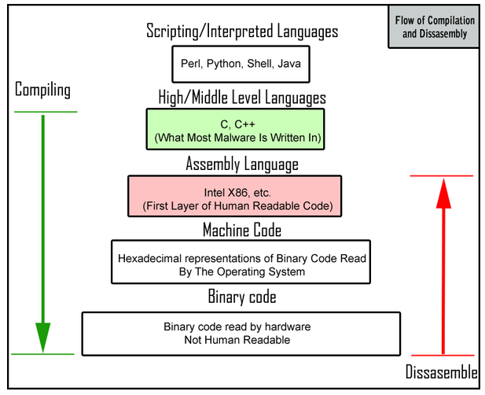

|  | Maven project-info (temp) What's RPF and how I got here Rovelli's recap commented |
Let's consider the news about the cosmic gold mine again: it looks like there's a large scale theory (General Relativity) who needs to "borrow" some pieces of a small scale theory (QFT) in order to work.
That would sound familiar to any developer who had to use Assembly code (low level language) in a C/C++ project (high level language), or to revert to C/C++ code from Java via javah.
In the IT context, that's not just familiar, it's also sound and meaningful, once you look at the intro picture: all code, no matter if higher level (Java, C++) or lower level (C, assembly) would ALWAYS BOIL DOWN to a COMMON GROUND: the binary code which runs on the hardware, making all those transistors to flip as required, when required, where required.
On the other side, in the physical context, there's NO COMMON GROUND for GR and QFT, at least there's none yet, check the recap on the status quo by Rovelli: compare the "what we know" section with the "all the rest is speculation" one.
Now: how could it be that Nature (which itself ain't split in
small vs large scale, sorry, it's just our current knowledge to be
split that way) works fine without a common ground?
A
single computer won't work without some sort of reductionism
like the one shown in the intro picture.
I'm not sure about
physicians, but ANY IT PERSON will likely kick hard on this, so I'd
recommend not to try and test us on this subject.
More in general, what's the output from activities in the physics
field?
What's the deriverables physicians produce?
It's
theories (mathematical models) and experimental data (records of
physical interactions), so it's knowledge, it's information.
So, for example, a question like "is such knowledge good enough to fit into an ontology?" is something quite natural for IT people to ask.
In the same way, it's perfectly natural for IT people to go and refactor, or go and redesign, any working legacy mess, no matter how complex, like fundamental physics has become these days.
TODOs: